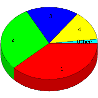

Week of 9/6/2009 to 9/12/2009: Top
5 of
5 File Types (Extensions)
Sorted by Access Count
Individual file types as determined by file extensions. All URLs that
do not contain an extension are counted as directories.

| Rank |
Type |
Accesses |
% |
Bytes |
% |
| 1 |
jpg
|
64 |
38.10 |
2,154,685 |
80.91 |
| 2 |
htm
|
49 |
29.17 |
119,601 |
4.49 |
| 3 |
Directory (folder)
|
30 |
17.86 |
70,875 |
2.66 |
| 4 |
gif
|
22 |
13.10 |
316,960 |
11.90 |
| 5 |
css
|
3 |
1.79 |
780 |
0.03 |